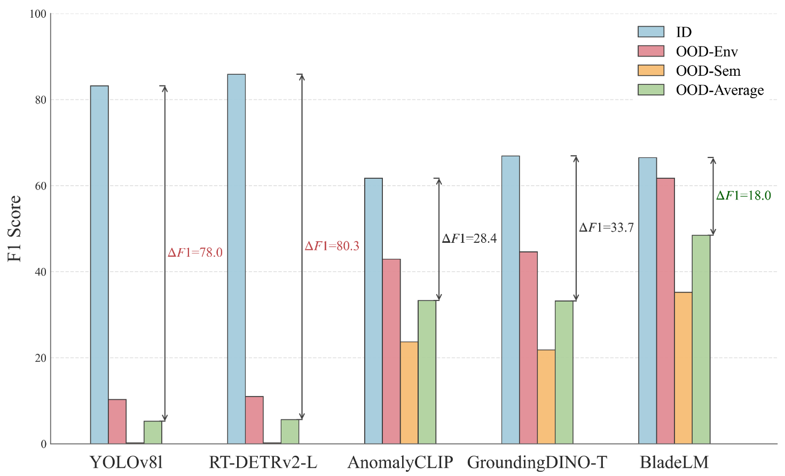
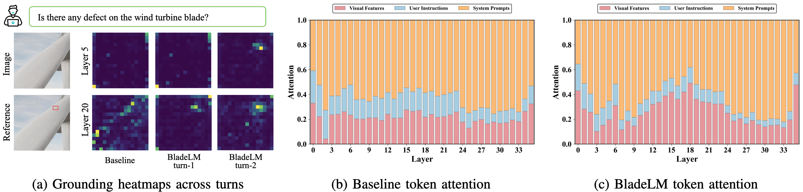

Abstract
BladeLM reframes wind turbine blade inspection as tool-augmented cognitive diagnosis, enabling MLLMs to localize visual evidence before producing explainable decisions.
Wind turbine blade (WTB) image inspection is commonly formulated as closed-set defect detection, which limits generalization and provides little diagnostic explanation. Although multimodal large language models (MLLMs) offer open-ended visual reasoning, they often miss subtle defects and produce coarse-grained answers in industrial inspection scenarios.
We propose BladeLM, a visual tool-augmented MLLM framework that reformulates WTB inspection as reasoning-driven cognitive diagnosis. BladeLM first inspects the global image, invokes visual tools to acquire localized evidence, and then reasons over observations to produce a diagnosis. To train this behavior, we design a data-centric post-training pipeline with 8k curated Chain-of-Thought trajectories for supervised fine-tuning and 18k closed-ended visual question-answering samples with verifiable rewards for reinforcement learning.
We further introduce WTB-Bench, a dedicated benchmark covering five subtasks for evaluating MLLM performance on WTB inspection. BladeLM achieves 76.06% average accuracy on WTB-Bench, transfers to the general industrial anomaly benchmark MMAD with 76.96% average accuracy, and obtains the smallest average F1 drop of 18.0% under out-of-distribution shifts.
Key Takeaways
From Labels to Reasoning
BladeLM moves beyond closed-set detection by producing spatially grounded diagnostic traces that users can inspect.
Localized Visual Evidence
The model actively marks suspicious regions and reasons over tool-generated observations before finalizing defect labels.
Generalizable Inspection
Strong WTB-Bench, MMAD, and OOD results suggest that explicit evidence acquisition improves industrial anomaly reasoning.
Motivation
Traditional WTB inspection pipelines are usually trained as closed-set detectors or segmenters: they can output bounding boxes and labels for predefined defects, but they provide limited reasoning about causes, risks, and maintenance implications. General MLLMs improve flexibility, yet they often overlook low-contrast or scale-varying blade defects and may return plausible but visually ungrounded answers.
BladeLM treats inspection as a multi-turn diagnostic process. It first scans the full image, identifies suspicious areas, uses visual tools to mark or zoom into local evidence, and then verifies the defect category with explicit reasoning. This turns the output from a single label into an inspectable diagnostic trace.

Figure 2. Existing expert detectors and general MLLMs each miss part of the diagnosis workflow; BladeLM connects localization, inspection, and explanation.
Data Pipeline and WTB-Bench
The training and evaluation data are curated from Roboflow object detection datasets, public WTB datasets including DTU-Drone and Blade30, and self-annotated private data. The pipeline removes near-duplicate images with perceptual hashing and DBSCAN clustering, normalizes heterogeneous defect labels into a canonical taxonomy, and generates image-question-answer triplets from structured annotations.
To create reasoning supervision, GPT-4o synthesizes multi-turn diagnostic trajectories with thinking, tool-call, and answer tags. DeepSeek-V3 review and human verification filter ambiguous or noisy samples. The final post-training data contains about 8k high-quality diagnostic instructions for SFT and 18k closed-ended VQA pairs for RL across 9 defect types.
WTB-Bench evaluates zero-shot diagnostic capability through existence, counting, classification, localization, and analysis questions. The benchmark is deduplicated from the training data and manually reviewed to reduce leakage and preserve professional validity.

Figure 3. Data construction pipeline and WTB-Bench composition, covering VQA generation, CoT synthesis, verification, and five diagnostic subtasks.
Method
BladeLM is an agentic vision-language reasoning framework built on a Qwen3-VL-4B backbone. Given an image-query pair, the model performs a coarse global inspection, invokes a drawing tool to obtain a marked intermediate image, re-examines the localized evidence, and returns a structured final diagnosis.
The two-stage post-training strategy combines supervised fine-tuning and reinforcement learning. SFT teaches expert-style trajectories that interleave reasoning and tool use. The RL stage uses Dr. GRPO with a composite verifiable reward: format reward for valid reasoning and answer tags, accuracy reward for the closed-ended decision, IoU reward for spatial grounding, and tool reward for appropriate visual tool interaction.

Figure 4. BladeLM uses a two-stage post-training strategy to learn multi-turn reasoning, tool invocation, and grounded diagnostic answers.
Results
On WTB-Bench, BladeLM reaches 76.06% average accuracy with a 4B backbone, outperforming the Qwen3-VL-4B base model by 13.73 percentage points and Qwen3-VL-32B by 8.81 percentage points. The gains are strongest on fine-grained tasks such as counting, classification, and localization, indicating that tool-augmented post-training improves localized visual evidence use rather than only instruction following.
| Model | Scale | Existence | Counting | Classification | Localization | Analysis | Average |
|---|---|---|---|---|---|---|---|
| Claude-4.5-haiku | - | 75.27 | 45.45 | 44.19 | 46.15 | 86.55 | 65.25 |
| Claude-4.6-sonnet | - | 80.92 | 50.27 | 48.06 | 62.09 | 93.45 | 69.25 |
| GPT-4o | - | 80.57 | 63.10 | 54.26 | 63.74 | 94.48 | 73.08 |
| GPT-5.5 | - | 85.87 | 55.61 | 60.08 | 73.08 | 95.86 | 76.08 |
| Gemini-3-flash | - | 89.05 | 57.75 | 62.40 | 73.08 | 96.21 | 77.75 |
| Gemini-3.1-pro | - | 84.45 | 64.71 | 66.67 | 76.92 | 96.21 | 79.25 |
| LLaVA-1.5 | 7B | 57.95 | 28.34 | 24.03 | 25.27 | 24.83 | 33.08 |
| LLaVA-NeXT | 8B | 63.96 | 42.78 | 48.06 | 52.20 | 75.52 | 58.25 |
| GLM-4.1V | 9B | 52.30 | 41.71 | 53.49 | 54.95 | 86.90 | 59.67 |
| InternVL3 | 8B | 66.78 | 52.94 | 50.00 | 56.59 | 87.59 | 64.50 |
| Qwen2.5-VL | 7B | 49.82 | 50.80 | 50.78 | 53.30 | 79.31 | 57.83 |
| Qwen3-VL | 2B | 60.07 | 46.52 | 48.45 | 48.90 | 83.45 | 59.42 |
| Qwen3-VL | 4B | 65.37 | 51.34 | 46.90 | 56.59 | 83.79 | 62.33 |
| Qwen3-VL | 8B | 67.49 | 49.73 | 48.84 | 58.24 | 84.83 | 63.50 |
| Qwen3-VL | 32B | 68.20 | 58.29 | 54.65 | 65.93 | 84.14 | 67.25 |
| BladeLM (ours) | 4B | 84.05 | 70.94 | 62.73 | 76.92 | 88.83 | 76.06 |
BladeLM also transfers to MMAD, a general industrial anomaly benchmark outside the WTB domain, achieving 76.96% average accuracy and clear gains on defect classification, localization, description, and analysis. Under OOD shifts, BladeLM maintains the best robustness among compared methods with an average F1 drop of only 18.0%.
| Model | Anomaly | Defect | Object | Average | ||||
|---|---|---|---|---|---|---|---|---|
| Detection | Classification | Localization | Description | Analysis | Classification | Analysis | ||
| LLaVA-1.5-7B | 54.01 | 38.22 | 40.59 | 50.43 | 68.74 | 70.74 | 70.58 | 56.19 |
| LLaVA-NeXT-8B | 57.91 | 43.15 | 49.21 | 61.56 | 75.60 | 71.56 | 72.33 | 61.62 |
| InternVL3-8B | 60.88 | 50.57 | 59.99 | 66.33 | 76.90 | 86.67 | 84.80 | 69.45 |
| GLM-4.1V-9B | 61.55 | 52.90 | 59.21 | 65.85 | 81.63 | 93.81 | 84.65 | 71.37 |
| Qwen2.5-VL-7B | 60.16 | 49.94 | 57.43 | 60.37 | 75.51 | 93.43 | 84.90 | 68.82 |
| Qwen3-VL-4B | 65.87 | 53.90 | 58.58 | 66.40 | 77.93 | 92.13 | 83.37 | 71.17 |
| Qwen3-VL-8B | 67.20 | 58.15 | 58.74 | 66.88 | 77.40 | 92.70 | 83.74 | 72.12 |
| BladeLM (ours) | 69.49 | 72.73 | 80.94 | 85.27 | 87.84 | 93.27 | 90.59 | 76.96 |

Figure 5. OOD robustness comparison across ID, OOD-Env, and OOD-Sem splits. BladeLM keeps the lowest average F1 drop.
Visual Reasoning Analysis
Attention analysis shows that BladeLM progressively shifts attention toward annotated defect regions from the first to the second reasoning turn, especially in deeper layers. Compared with the baseline, BladeLM allocates more attention to visual evidence during tool-augmented diagnosis, which helps mitigate visual attention diminishing during long reasoning.

Figure 6. Visual grounding and attention allocation show BladeLM focusing more strongly on defect-relevant visual tokens during tool-augmented reasoning.
Qualitative trajectories illustrate how the model handles single-defect, multi-defect, and no-defect cases. BladeLM first inspects the image, calls the visual tool to mark suspicious regions when needed, receives visual feedback, and then verifies whether the marked evidence supports the final defect label.

Figure 7. Example diagnostic trajectories for single-defect, multi-defect, and no-defect cases, including tool calls and verification steps.
BibTeX
@article{he2026bladelm,
title={BladeLM: Towards Generalizable, Explainable and Fine-Grained Wind Turbine Blade Diagnosis with MLLMs},
author={He, Jingtai and Kang, Xingjian and Sun, Siming and Meng, Shiyuan and Yang, Qinmin and Meng, Wenchao},
journal={Preprint},
year={2026},
url={https://withtai.github.io/bladelm-project-page}
}